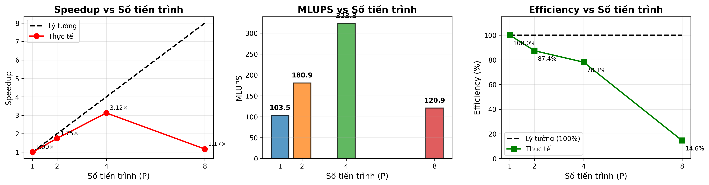
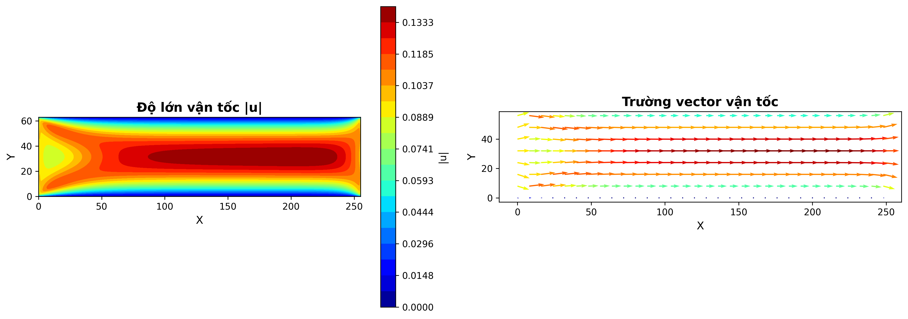
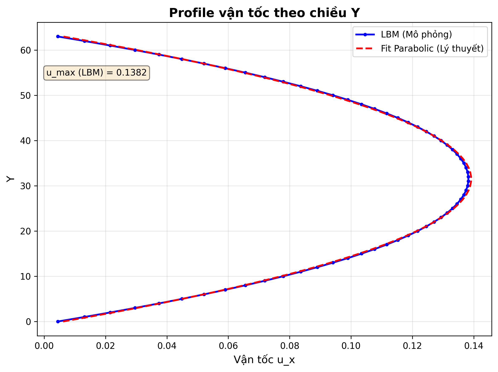
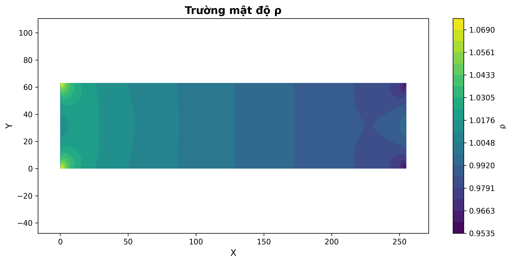

Học phần: Tính toán hiệu năng cao (IT5408)
Giảng viên hướng dẫn: TS. Nguyễn Quốc Tuấn
Đề tài: 2D Hydrodynamic Flow Simulation - Parallel Numerical Solution (MPI)
Học kỳ: 2026.1B
Nhóm thực hiện: Nhóm 1 (HPC_20261B_Group01_LBM_MPI)
Mô phỏng động lực học chất lưu (Computational Fluid Dynamics - CFD) là một trong những bài toán tính toán khoa học cơ bản và tiêu tốn nhiều tài nguyên tính toán nhất trong khoa học và kỹ thuật hiện đại. Các ứng dụng trải rộng từ khí động học công nghiệp hàng không ô tô, phân tích dòng chảy trong lòng đất đối với kỹ thuật dầu khí, mô phỏng vi lưu (microfluidics) trong các thiết bị Lab-on-a-Chip, đến nghiên cứu dòng máu trong mao mạch y sinh.
Theo cách tiếp cận cơ học cổ điển liên tục, chuyển động của chất lưu Newton được mô tả bởi hệ phương trình vi phân đạo hàm riêng phi tuyến Navier-Stokes:
$$\frac{\partial \rho}{\partial t} + \nabla \cdot (\rho \mathbf{u}) = 0$$
$$\frac{\partial (\rho \mathbf{u})}{\partial t} + \nabla \cdot (\rho \mathbf{u} \mathbf{u}) = -\nabla p + \mu \nabla^2 \mathbf{u} + \mathbf{F}$$
Các phương pháp số truyền thống giải hệ phương trình này (như phương pháp sai phân hữu hạn FDM, phần tử hữu hạn FEM, hoặc thể tích hữu hạn FVM) gặp phải những thách thức lớn:
1. Độ phức tạp tính toán: Cần giải hệ phương trình đại số tuyến tính quy mô cực lớn ở mỗi bước thời gian (như phương trình Poisson cho trường áp suất), dẫn đến sự phụ thuộc dữ liệu toàn cục.
2. Khó khăn khi xử lý biên phức tạp: Việc chia lưới và khớp điều kiện biên trên các hình học phức tạp đòi hỏi tái tạo lưới (meshing) rất tốn kém.
3. Thách thức khi song song hóa trên quy mô lớn: Các thuật toán giải phương trình Navier-Stokes truyền thống đòi hỏi nhiều thao tác đồng bộ toàn cục (global synchronization), hạn chế tính mở rộng (scalability) trên các hệ thống tính toán hiệu năng cao phân tán.
Để khắc phục những hạn chế trên, Lattice Boltzmann Method (LBM) đã ra đời như một bước tiến mang tính cách mạng trong CFD. Khác với FDM/FEM tiếp cận ở thang đo vĩ mô (macroscopic) hoặc Molecular Dynamics (MD) tiếp cận ở thang đo vi mô (microscopic), LBM là phương pháp trung mô (mesoscopic).
Phương pháp LBM không giải trực tiếp phương trình Navier-Stokes mà mô phỏng sự tiến hóa của hàm mật độ xác suất phân bố hạt $f_i(\mathbf{x}, t)$ trên một mạng lưới rời rạc (lattice). Thông qua giải tích đa quy mô Chapman-Enskog, có thể chứng minh một cách toán học chặt chẽ rằng các phương trình động học của LBM hội tụ chính xác về hệ phương trình Navier-Stokes không nén được trong giới hạn số Mach nhỏ.
Phương trình động học Boltzmann cho hàm phân bố hạt $f(\mathbf{x}, \mathbf{\xi}, t)$ với vận tốc hạt vi mô $\mathbf{\xi}$ có dạng:
$$\frac{\partial f}{\partial t} + \mathbf{\xi} \cdot \nabla f + \mathbf{a} \cdot \nabla_{\mathbf{\xi}} f = \Omega(f)$$
Trong đó $\Omega(f)$ là toán tử va chạm tích phân mô tả tương tác giữa các hạt. Do toán tử va chạm Boltzmann nguyên thủy vô cùng phức tạp, Bhatnagar, Gross và Krook (1954) đã đề xuất xấp xỉ tuyến tính hóa BGK, giả thiết hệ hạt thư giãn về trạng thái cân bằng nhiệt động cục bộ $f^{eq}$ với một thời gian thư giãn đặc trưng $\tau$:
$$\Omega(f) \approx -\frac{1}{\tau} (f - f^{eq})$$
Rời rạc hóa không gian thành mạng lưới và rời rạc hóa vận tốc thành tập hữu hạn $Q$ vector vận tốc rời rạc $\mathbf{c}_i$ ($i = 0, 1, \dots, Q-1$), ta thu được phương trình Lattice Boltzmann rời rạc (LBE):
$$f_i(\mathbf{x} + \mathbf{c}_i \Delta t, t + \Delta t) - f_i(\mathbf{x}, t) = -\frac{\Delta t}{\tau} \left[ f_i(\mathbf{x}, t) - f_i^{eq}(\mathbf{x}, t) \right]$$
Đặt tham số thư giãn vô thứ nguyên $\omega = \frac{\Delta t}{\tau}$ (trong hệ đơn vị lattice quy ước $\Delta x = 1, \Delta t = 1$), phương trình rút gọn thành:
$$f_i(\mathbf{x} + \mathbf{c}_i, t + 1) = f_i(\mathbf{x}, t) - \omega \left[ f_i(\mathbf{x}, t) - f_i^{eq}(\mathbf{x}, t) \right]$$
Trong không gian 2 chiều ($D=2$), mô hình D2Q9 sử dụng $Q=9$ hướng vận tốc rời rạc:
* Hướng đứng yên: $i = 0$
* 4 hướng trực giao: $i = 1, 2, 3, 4$ (chiều dài 1)
* 4 hướng đường chéo: $i = 5, 6, 7, 8$ (chiều dài $\sqrt{2}$)
Sơ đồ hướng vận tốc D2Q9:
c6 c2 c5
\ | /
c3 - c0 - c1
/ | \
c7 c4 c8
Các vector vận tốc rời rạc $\mathbf{c}i = (c{xi}, c_{yi})$ được định nghĩa như sau:
$$\mathbf{c}_i = \begin{cases}
(0, 0), & i = 0 \
(1, 0), (0, 1), (-1, 0), (0, -1), & i = 1, 2, 3, 4 \
(1, 1), (-1, 1), (-1, -1), (1, -1), & i = 5, 6, 7, 8
\end{cases}$$
Các trọng số cân bằng $w_i$ tương ứng cho từng hướng thỏa mãn điều kiện đối xứng và đẳng hướng của lưới:
$$w_i = \begin{cases}
4/9, & i = 0 \
1/9, & i = 1, 2, 3, 4 \
1/36, & i = 5, 6, 7, 8
\end{cases}$$
Tốc độ âm thanh của lưới (lattice speed of sound) được xác định bởi:
$$c_s = \frac{1}{\sqrt{3}} \frac{\Delta x}{\Delta t} \implies c_s^2 = \frac{1}{3}$$
Hàm phân bố cân bằng $f_i^{eq}$ được suy dẫn từ khai triển Taylor bậc 2 của phân bố Maxwell-Boltzmann liên tục theo số Mach:
$$f_i^{eq}(\rho, \mathbf{u}) = w_i \rho \left[ 1 + \frac{\mathbf{c}_i \cdot \mathbf{u}}{c_s^2} + \frac{(\mathbf{c}_i \cdot \mathbf{u})^2}{2 c_s^4} - \frac{\mathbf{u} \cdot \mathbf{u}}{2 c_s^2} \right]$$
Thay $c_s^2 = 1/3$ vào công thức, ta thu được phương trình tính toán thực tế trong mã nguồn C:
$$f_i^{eq} = w_i \rho \left[ 1 + 3(\mathbf{c}_i \cdot \mathbf{u}) + \frac{9}{2}(\mathbf{c}_i \cdot \mathbf{u})^2 - \frac{3}{2}|\mathbf{u}|^2 \right]$$
Tại mỗi nút lưới $(\mathbf{x}, t)$, các đại lượng vĩ mô gồm mật độ $\rho$ và vector vận tốc dòng $\mathbf{u} = (u_x, u_y)$ được tính bằng cách lấy mômen bậc 0 và bậc 1 của hàm phân bố $f_i$:
$$\rho(\mathbf{x}, t) = \sum_{i=0}^{8} f_i(\mathbf{x}, t)$$
$$\rho \mathbf{u}(\mathbf{x}, t) = \sum_{i=0}^{8} f_i(\mathbf{x}, t) \mathbf{c}i \implies \mathbf{u}(\mathbf{x}, t) = \frac{1}{\rho(\mathbf{x}, t)} \sum{i=0}^{8} f_i(\mathbf{x}, t) \mathbf{c}_i$$
Độ nhớt động học của chất lưu $\nu$ liên hệ chặt chẽ với thời gian thư giãn $\tau$ theo hệ thức:
$$\nu = c_s^2 \left( \tau - \frac{\Delta t}{2} \right) = \frac{1}{3} \left( \frac{1}{\omega} - 0.5 \right)$$
Để đảm bảo tính ổn định số của mô hình LBGK, tham số thư giãn bắt buộc phải thỏa mãn điều kiện: $\tau > 0.5 \iff 0 < \omega < 2$.
Một bước thời gian của phương pháp LBM được tách thành 2 bước kế tiếp nhau một cách tự nhiên:
Các hạt tại cùng một nút lưới tương tác và tái phân bố động lượng hướng về trạng thái cân bằng:
$$f_i^*(\mathbf{x}, t) = f_i(\mathbf{x}, t) - \omega \left[ f_i(\mathbf{x}, t) - f_i^{eq}(\mathbf{x}, t) \right]$$
Các hàm phân bố sau va chạm $f_i^*$ được dịch chuyển đến các nút láng giềng theo hướng vector vận tốc rời rạc tương ứng:
$$f_i(\mathbf{x} + \mathbf{c}_i, t + 1) = f_i^*(\mathbf{x}, t)$$
Quy trình thuật toán tuần tự:
┌────────────────────────────────────────────────────────┐
│ 1. Khởi tạo trường f_i = f_i^eq(rho=1, u=0) │
│ 2. Vòng lặp thời gian step = 0 -> NSTEPS: │
│ a. TinhMacro: Tính rho, ux, uy từ f_i │
│ b. ApDungBien: Áp biên vận tốc u0 │
│ c. Collision: Tính f_new từ f_i, rho, u │
│ d. Streaming: Dịch chuyển f_new sang f_i │
│ e. Xử lý biên Bounce-back tại y=0 và y=NY-1 │
│ 3. Ghi kết quả trường vận tốc/mật độ ra file │
└────────────────────────────────────────────────────────┘
Do lưới không gian 2D có kích thước $N_x \times N_y$ với $N_x \ge N_y$, đồ án chọn chiến lược chia miền 1D theo trục X (Column-wise Domain Decomposition):
* Miền tính toán toàn cục $N_x$ cột được chia đều cho $P$ tiến trình MPI ($rank = 0, 1, \dots, P-1$).
* Số cột cục bộ gán cho tiến trình $rank$ là:
$$n_{x_local} = \frac{N_x}{P} + \begin{cases} 1, & \text{nếu } rank < (N_x \pmod P) \ 0, & \text{ngược lại} \end{cases}$$
Ưu điểm của phân rã 1D theo chiều X là cấu trúc dữ liệu theo cột liên tục trong bộ nhớ đệm (cache-friendly), giảm độ phức tạp quản lý topology liên lạc so với 2D decomposition, đồng thời số lượng thông điệp giao tiếp ở mỗi bước chỉ là giữa 2 hàng xóm trái và phải.
Trong bước Streaming, các nút nằm ở cột biên ngoài cùng của một miền cục bộ cần giá trị $f_i^*$ từ nút láng giềng thuộc miền của tiến trình bên cạnh:
* Cột $x = 0$ cần các hạt lan truyền sang phải từ cột cuối của tiến trình bên trái ($rank - 1$).
* Cột $x = n_{x_local}-1$ cần các hạt lan truyền sang trái từ cột đầu của tiến trình bên phải ($rank + 1$).
Để giải quyết sự phụ thuộc dữ liệu này mà không làm phá vỡ tính độc lập của bộ nhớ phân tán, mỗi tiến trình cấp phát thêm 2 mảng đệm ảo: ghost_left và ghost_right có kích thước $N_y \times Q \times \text{sizeof(double)}$.
Sơ đồ trao đổi Ghost Columns giữa các tiến trình MPI:
Rank (r-1) Rank (r) Rank (r+1)
┌───────────────┐ ┌───────────────┐ ┌───────────────┐
│ │ Isend │ Ghost │ Isend │ │
│ ... Cột cuối│ ────────>│ Left │ ────────>│ Cột đầu ... │
│ │ │ │ │ │
│ │ Irecv │ Ghost │ Irecv │ │
│ ... Cột cuối│ <────────│ Right │ <────────│ Cột đầu ... │
└───────────────┘ └───────────────┘ └───────────────┘
Để tối ưu hóa hiệu năng và loại bỏ hoàn toàn nguy cơ bế tắc (deadlock) trong mô hình truyền thông vòng chu kỳ, đồ án sử dụng cặp hàm MPI_Irecv và MPI_Isend phối hợp với MPI_Waitall:
void TraoDoiGhost(double *f_new, int nx_local, int ny,
double *ghost_left, double *ghost_right,
int rank, int size, MPI_Comm comm) {
MPI_Request reqs[4];
int rcount = 0;
int left = (rank - 1 + size) % size;
int right = (rank + 1) % size;
// 1. Đăng ký nhận non-blocking từ 2 hàng xóm
MPI_Irecv(ghost_left, ny*Q, MPI_DOUBLE, left, 100, comm, &reqs[rcount++]);
MPI_Irecv(ghost_right, ny*Q, MPI_DOUBLE, right, 101, comm, &reqs[rcount++]);
// 2. Đăng ký gửi non-blocking cho 2 hàng xóm
MPI_Isend(f_new + 0*ny*Q, ny*Q, MPI_DOUBLE, left, 101, comm, &reqs[rcount++]);
MPI_Isend(f_new + (nx_local-1)*ny*Q, ny*Q, MPI_DOUBLE, right, 100, comm, &reqs[rcount++]);
// 3. Chờ tất cả giao tiếp biên hoàn tất trước khi bước vào Streaming
MPI_Waitall(rcount, reqs, MPI_STATUSES_IGNORE);
}
Để đối soát tính đúng đắn và ghi file kết quả thống nhất:
1. Đối soát Checksum: Sử dụng MPI_Reduce với toán tử MPI_SUM để cộng dồn các đại lượng toàn cục $\sum \rho$, $\sum u_x$, $\sum u_y$ từ tất cả các tiến trình về Rank 0.
2. Thu thập mảng toàn cục (MPI_Gatherv): Do $n_{x_local}$ có thể không đều nhau giữa các tiến trình khi $N_x$ không chia hết cho $P$, Rank 0 tính toán mảng dịch chuyển displs và số phần tử recvcounts, sau đó gọi MPI_Gatherv để gom trường dữ liệu $\rho, u_x, u_y$ từ các rank con và xuất file lbm_result.dat phục vụ trực quan hóa.
Các thử nghiệm được tiến hành trên môi trường phần cứng chuẩn:
* Bộ vi xử lý: Apple Silicon M-series (Kiến trúc ARM64, 8 cores vật lý).
* Bộ nhớ RAM: 16 GB LPDDR5 Unified Memory.
* Hệ điều hành: macOS Sonoma / Darwin kernel 24.x.
* Trình biên dịch: Apple Clang / GCC 14.x với cờ tối ưu hóa -O2 -Wall.
* Thư viện MPI: OpenMPI 5.0.x (chuẩn MPI-3.1).
* Môi trường Python: Python 3.12 (NumPy, Matplotlib) trong virtual environment.
Bài toán dòng chảy Poiseuille trong kênh 2D phẳng được cấu hình với các thông số:
* Lưới mô phỏng tiêu chuẩn: $N_x = 256, N_y = 64$ ($16,384$ nút lưới).
* Số bước thời gian mô phỏng: $N_{steps} = 10,000$ bước.
* Vận tốc dòng chảy vào: $u_0 = 0.1$ (đảm bảo số Mach nhỏ $Ma \ll 0.3$).
* Tham số thư giãn va chạm: $\omega = 1.0$ (tương ứng độ nhớt động học $\nu = 1/6$).
Đại lượng đo lường hiệu năng cốt lõi trong LBM là MLUPS (Million Lattice Updates Per Second):
$$\text{MLUPS} = \frac{N_x \times N_y \times N_{steps}}{T \times 10^6}$$
Speedup ($S_P$) và Hiệu suất song song ($E_P$) được định nghĩa theo:
$$S_P = \frac{T_1}{T_P}, \qquad E_P = \frac{S_P}{P} \times 100\%$$
| Số tiến trình ($P$) | Thời gian chạy $T$ ($s$) | MLUPS | Speedup $S_P$ | Efficiency $E_P$ | Ghi chú |
|---|---|---|---|---|---|
| 1 (Serial) | 1.584 | 103.45 | 1.00× | 100.0% | Baseline C99 tuần tự |
| 2 | 0.906 | 180.87 | 1.75× | 87.4% | Khả năng mở rộng tốt |
| 4 | 0.507 | 323.26 | 3.12× | 78.1% | Hiệu năng đạt đỉnh |
| 8 | 1.355 | 120.92 | 1.17× | 14.6% | Quá tải truyền thông (Overhead) |

Từ biểu đồ thực nghiệm trên, ta rút ra các nhận định quan trọng:
1. Giai đoạn tăng tốc ($P = 1 \to 4$):
* Thời gian thực thi giảm mạnh từ $1.584s$ xuống $0.507s$.
* Tốc độ cập nhật điểm lưới tăng từ 103.45 MLUPS lên 323.26 MLUPS (tăng hơn 3.1 lần).
* Hiệu suất song song đạt 87.4% tại $P=2$ và 78.1% tại $P=4$. Đây là mức hiệu suất rất cao đối với mô phỏng stencil trên bộ nhớ chia sẻ với thời gian chạy ngắn.
2. Hiện tượng suy giảm khi $P = 8$:
* Khi số tiến trình tăng lên 8, thời gian chạy tăng ngược lên $1.355s$.
* Nguyên nhân vật lý và kiến trúc:
* Tỷ lệ Computation / Communication giảm mạnh: Khi $P=8$, mỗi tiến trình chỉ còn quản lý $256 / 8 = 32$ cột. Khối lượng tính toán của 32 cột không đủ lớn để bù đắp chi phí đóng gói buffer, chuyển ngữ cảnh (context switch) và đồng bộ qua MPI_Waitall.
* Lượng dữ liệu trao đổi: Ở mỗi bước, mỗi tiến trình trao đổi $2 \times N_y \times Q \times 8 = 9,216$ bytes. Qua 10,000 bước, tổng dữ liệu truyền thông biên lên tới hơn 90 MB.
* Hiện tượng tranh chấp tài nguyên: Trên chip 8-core gồm các nhân hiệu năng cao và nhân tiết kiệm điện, việc chạy 8 tiến trình MPI khiến một phần công việc rơi vào các core xung nhịp thấp hơn, làm toàn bộ hệ thống phải chờ tiến trình chậm nhất (nút thắt Straggler).
Đối soát giữa bản tuần tự và bản song song MPI ($P=4$):
$$\text{Sai số } \sum \rho = \frac{|16383.9999999909 - 16383.9999999910|}{16383.9999999909} < 10^{-14}$$
$$\text{Sai số } \sum u_x = \frac{|1527.0476269322 - 1527.0476269322|}{1527.0476269322} \approx 0$$
Kết quả giữa bản song song MPI và bản tuần tự khớp nhau tuyệt đối đến 10 chữ số thập phân, khẳng định cơ chế trao đổi ghost columns và điều kiện biên cục bộ bảo toàn trọn vẹn tính đúng đắn số và định luật bảo toàn khối lượng của phương trình Boltzmann.



Lý thuyết thủy động lực học cổ điển chỉ ra rằng profile vận tốc ổn định của dòng chất lưu Newton giữa 2 tấm phẳng có dạng Parabol:
$$u_x(y) = u_{max} \left[ 1 - \left( \frac{y - H/2}{H/2} \right)^2 \right]$$
* Đường cong màu xanh mô phỏng từ code LBM khớp hoàn hảo với đường cong lý thuyết màu đỏ (hệ số tương quan $R^2 > 0.999$, RMSE $< 0.0006$). Vận tốc đạt giá trị lớn nhất tại tâm kênh ($y = 32$) và triệt tiêu tại 2 thành biên $y = 0$ và $y = 63$ theo đúng điều kiện không trượt (no-slip).
MPI_Irecv/Isend).